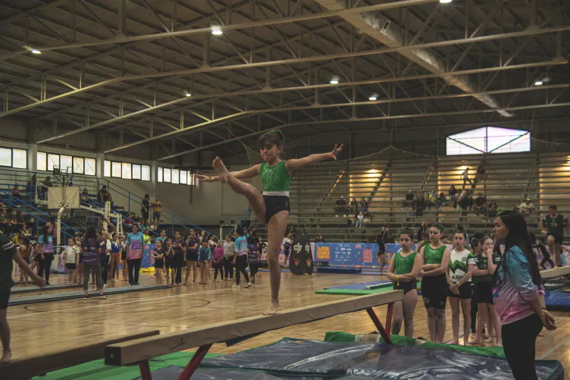
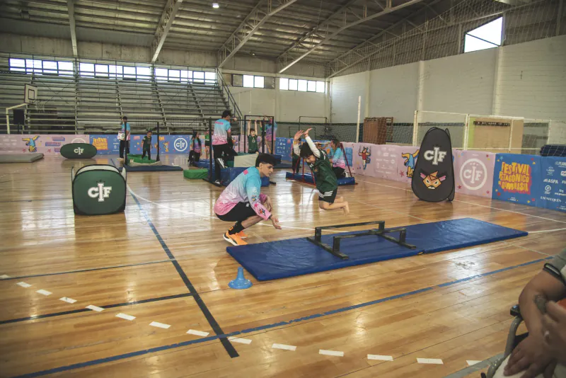
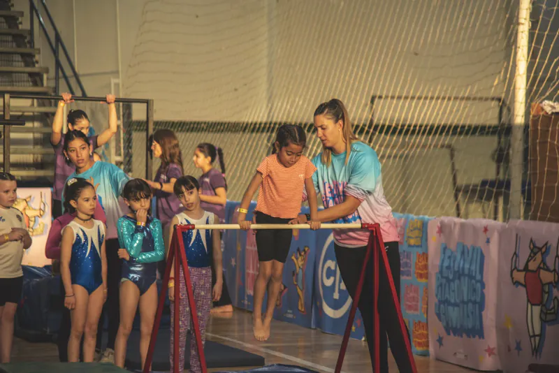
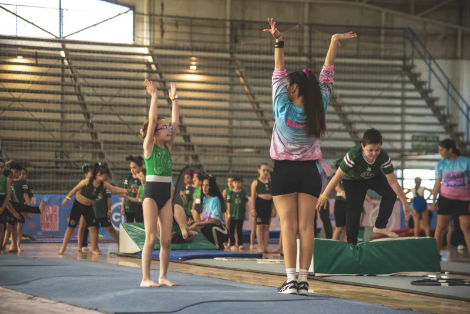
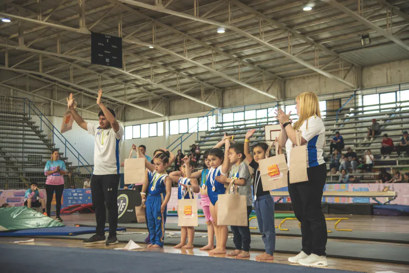
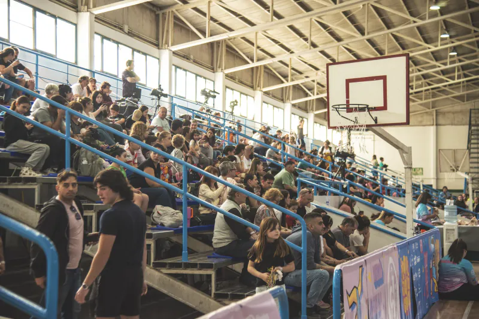
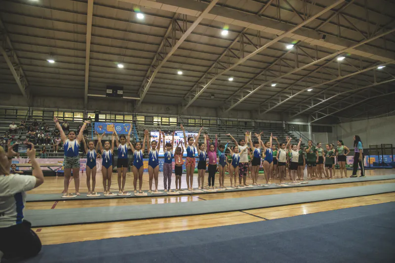
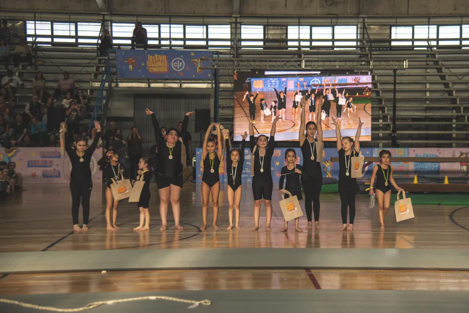
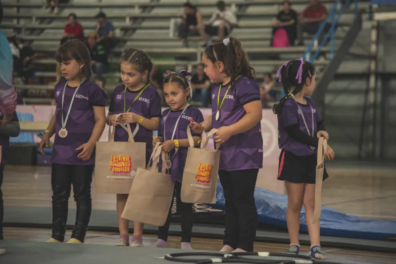

Edición 2025
La primera edición
Una jornada de gimnasia, instituciones, familias y público.
Lo que dejó la primera edición
Una primera edición que reunió gimnasia, instituciones, familias y público durante toda la jornada.

La primera edición
Un archivo de pista, familias, clubes y reconocimientos.








